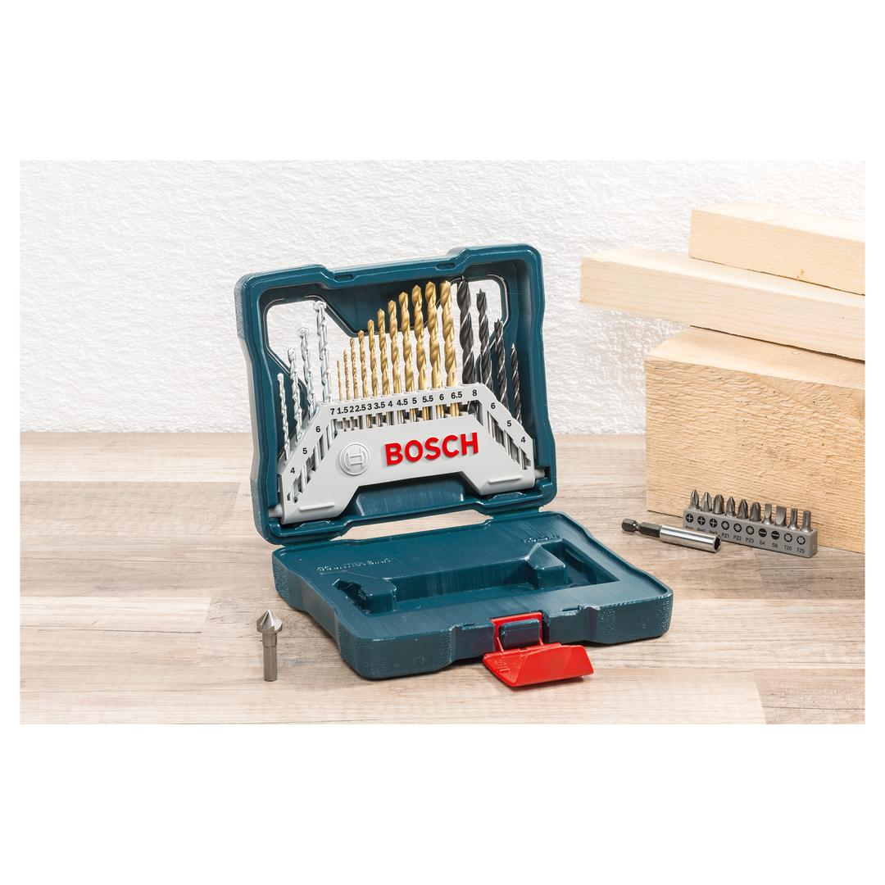
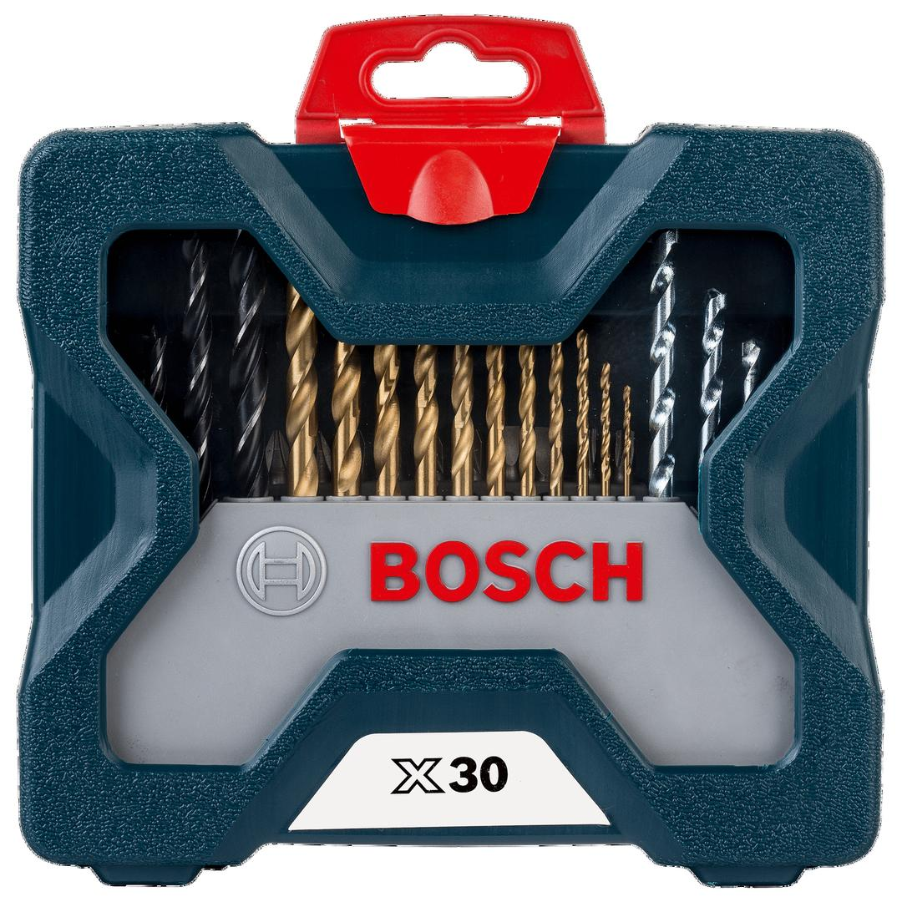

2607017401


| Contents |
11 HSS-TiN metal drill bits, Ø 1.5-6.5 mm
4 masonry drill bits, Ø 4-7 mm
4 wood drill bits, Ø 4-8 mm
10 screwdriver bits, L = 25 mm
PH 1/2/3
PZ 1/2/3
S 4/6
T 20/25
1 universal holder, magnetic
1 countersink |
| Packaging |
Plastic case with window and printed card |
| Dimensions (lxwxh) |
171 x 154 x 48 mm |
| Weight |
0.484 kg |
| Pack quantity |
30 Pcs |
| Minimum order quantity |
10 Pcs |
DIY with Bosch quality: Drilling and screwdriving made easy.